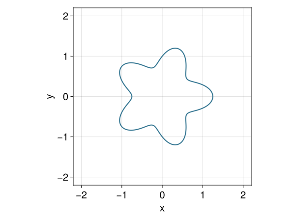

Interpolation
LevelSetMethods.jl provides a built-in high-performance piecewise polynomial interpolation scheme. This allows you to construct a continuous interpolant from the discrete data in a LevelSet or LevelSetEquation. This is useful for evaluating the level-set function at arbitrary coordinates, computing analytical gradients and Hessians, or for visualization.
Basic Usage
To construct an interpolant, use the interpolate function:
using LevelSetMethods
a, b = (-2.0, -2.0), (2.0, 2.0)
ϕ = LevelSetMethods.star(CartesianGrid(a, b, (50, 50)))
# Add boundary conditions for safe evaluation near edges
bc = ntuple(_ -> (NeumannGradientBC(), NeumannGradientBC()), 2)
ϕ = LevelSetMethods.add_boundary_conditions(ϕ, bc)
itp = interpolate(ϕ) # cubic interpolation by default (order=3)LevelSetMethods.PiecewisePolynomialInterpolation{LevelSet{Matrix{Float64}, CartesianGrid{2, Float64}, Tuple{Tuple{NeumannGradientBC, NeumannGradientBC}, Tuple{NeumannGradientBC, NeumannGradientBC}}}, 2, Float64}(LevelSet{Matrix{Float64}, CartesianGrid{2, Float64}, Tuple{Tuple{NeumannGradientBC, NeumannGradientBC}, Tuple{NeumannGradientBC, NeumannGradientBC}}}([1.6516504294495538 1.5771082671086496 … 1.5771082671086496 1.6516504294495538; 1.61386488105539 1.536204424357872 … 1.536204424357872 1.61386488105539; … ; 1.928745795440269 1.8897578149511456 … 1.8897578149511456 1.928745795440269; 2.0052038200428273 1.965502409387009 … 1.965502409387009 2.0052038200428273], CartesianGrid{2, Float64}([-2.0, -2.0], [2.0, 2.0], (50, 50)), ((NeumannGradientBC(), NeumannGradientBC()), (NeumannGradientBC(), NeumannGradientBC()))), [9.814582280413276e-18 0.9999999999999999 6.742189357592693e-16 -1.0576274721779393e-16; -0.11111111111111109 0.8333333333333331 0.3333333333333338 -0.05555555555555559; -0.05555555555555555 0.3333333333333333 0.8333333333333336 -0.11111111111111105; 1.2859121045718147e-17 -7.440045530368484e-17 1.0000000000000002 1.3652001061193811e-18], [0.0 0.0 0.0 0.0; 0.0 0.0 0.0 0.0; 0.0 0.0 0.0 0.0; 0.0 0.0 0.0 0.0], [0.0 0.0 0.0 0.0; 0.0 0.0 0.0 0.0; 0.0 0.0 0.0 0.0; 0.0 0.0 0.0 0.0], [0.0 0.0 0.0 0.0; 0.0 0.0 0.0 0.0; 0.0 0.0 0.0 0.0; 0.0 0.0 0.0 0.0], Matrix{Float64}(undef, 0, 0), CartesianIndex(0, 0))The returned object is a PiecewisePolynomialInterpolation, which is callable and efficient. Once constructed, the interpolant can be used to evaluate the level-set function anywhere inside (and even slightly outside, using boundary conditions) the grid:
itp(0.5, 0.5)-0.11616315120712234Plotting
Interpolation is particularly useful for creating smooth plots. Here is an example using Makie:
using GLMakie
LevelSetMethods.set_makie_theme!()
xx = yy = -2:0.01:2
# Evaluate on a fine grid for plotting
contour(xx, yy, [itp(x, y) for x in xx, y in yy]; levels = [0], linewidth = 2)
Derivatives
The interpolant also provides analytical gradients and Hessians via the LevelSetMethods.gradient and LevelSetMethods.hessian functions. These are zero-allocation and computed using Horner's method on the underlying Lagrange polynomials.
x = (0.1, 0.2)
val = itp(x)
grad = LevelSetMethods.gradient(itp, x)
hess = LevelSetMethods.hessian(itp, x)
println("Value: ", val)
println("Gradient: ", grad)Three-dimensional Level Sets
Using it on three-dimensional level sets is identical:
using LinearAlgebra, StaticArrays
grid = CartesianGrid((-1.5, -1.5, -1.5), (1.5, 1.5, 1.5), (32, 32, 32))
P1, P2 = (-1.0, 0.0, 0.0), (1.0, 0.0, 0.0)
b = 1.05
f = (x) -> norm(x .- P1)*norm(x .- P2) - b^2
ϕ3 = LevelSet(f, grid)
bc3 = ntuple(_ -> (NeumannGradientBC(), NeumannGradientBC()), 3)
ϕ3 = LevelSetMethods.add_boundary_conditions(ϕ3, bc3)
itp3 = interpolate(ϕ3)
println("ϕ(0.5, 0.5, 0.5) = ", f(SVector(0.5, 0.5, 0.5)))
println("itp(0.5, 0.5, 0.5) = ", itp3(0.5, 0.5, 0.5))ϕ(0.5, 0.5, 0.5) = 0.3336406616345071
itp(0.5, 0.5, 0.5) = 0.33361166021372846